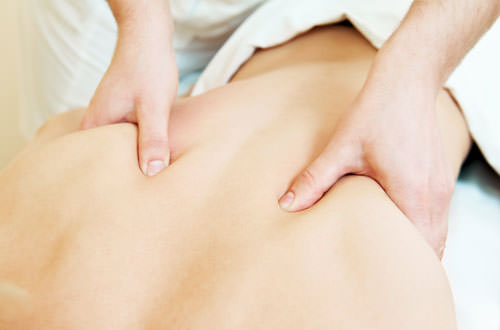

What Is Ehlers-Danlos Syndrome?
Ehlers-Danlos Syndrome (EDS) is a group of inherited connective tissue disorders that affect the body's collagen, the most abundant protein in the human body. Collagen provides structural support to skin, ligaments, tendons, blood vessels, organs, and bones. When collagen is produced incorrectly or in insufficient quantities, the connective tissues throughout the body become weaker, more elastic, and less resilient than they should be.
There are currently 13 recognized subtypes of EDS, each caused by different genetic mutations and presenting with distinct clinical features. The most common form is hypermobile Ehlers-Danlos Syndrome (hEDS), which primarily affects the joints and is characterized by widespread joint hypermobility, chronic musculoskeletal pain, and frequent joint subluxations or dislocations. While the exact prevalence of hEDS is difficult to determine due to underdiagnosis, estimates suggest it affects between 1 in 3,500 and 1 in 5,000 individuals, though some researchers believe the true prevalence may be significantly higher.
Other subtypes include classical EDS (affecting skin and joints), vascular EDS (affecting blood vessels and organs), and kyphoscoliotic EDS (affecting the spine and eyes), among others. Each subtype requires individualized medical management, but physical therapy plays a central role in the treatment of nearly all forms of EDS, particularly hEDS.

Symptoms and Diagnosis
Ehlers-Danlos Syndrome, particularly the hypermobile subtype, presents with a wide range of symptoms that can vary significantly from person to person. This variability, combined with a general lack of awareness among healthcare providers, means that many patients go years or even decades before receiving an accurate diagnosis. Understanding the common signs of EDS is the first step toward getting appropriate treatment.
Common Signs and Symptoms of hEDS
- Generalized joint hypermobility — Joints that move beyond the normal range of motion, often described as being "double-jointed." This can affect large joints like knees, elbows, and shoulders as well as small joints in the fingers, wrists, and toes.
- Chronic joint pain — Persistent pain in multiple joints that may not correlate with visible inflammation or structural damage on imaging. The pain is often widespread and can migrate between joints.
- Frequent subluxations and dislocations — Joints that partially or fully slip out of position during everyday activities. Some patients experience multiple subluxations daily, while others may have less frequent but more dramatic dislocations.
- Skin hyperextensibility and fragility — Skin that stretches more than normal and may bruise easily, heal slowly, or develop atrophic scars. This feature is more prominent in classical EDS but can occur in hEDS as well.
- Chronic fatigue — Persistent exhaustion that is not fully explained by sleep quality or activity level. Fatigue in EDS is multifactorial, related to the increased muscular effort required to stabilize hypermobile joints, autonomic dysfunction, poor sleep quality, and chronic pain.
- Gastrointestinal issues — Functional GI symptoms including reflux, bloating, constipation, and nausea are common in EDS patients due to the role of connective tissue in the digestive system.
- Autonomic dysfunction — Including postural orthostatic tachycardia syndrome (POTS), heat intolerance, and dysregulated blood pressure. These symptoms are managed in coordination with your physician.
- Proprioceptive deficits — Difficulty sensing where your body is in space, leading to clumsiness, poor balance, and increased injury risk. This is one of the most treatable aspects of EDS through physical therapy.
The Beighton Score and Clinical Diagnosis
The Beighton score is a simple clinical screening tool used to assess generalized joint hypermobility. It evaluates nine specific joint movements including passive extension of the fifth finger beyond 90 degrees, passive thumb apposition to the forearm, hyperextension of the elbows and knees beyond 10 degrees, and the ability to place palms flat on the floor with knees straight. A score of 5 or higher in adults generally indicates generalized hypermobility.
However, the Beighton score alone does not diagnose EDS. The 2017 diagnostic criteria for hEDS require generalized hypermobility plus at least two of three additional criteria related to systemic connective tissue involvement, musculoskeletal complications, and family history, with exclusion of other connective tissue disorders. A formal diagnosis is typically made by a geneticist or rheumatologist, though your physical therapist can perform the initial screening and refer you appropriately.
The Challenge of Misdiagnosis
EDS is frequently misdiagnosed or overlooked entirely. Patients are often told their pain is psychosomatic, attributed to anxiety, or simply labeled as having "loose joints" without further investigation. The average time from symptom onset to EDS diagnosis ranges from 10 to 20 years in many published studies. Common misdiagnoses include fibromyalgia, chronic fatigue syndrome, rheumatoid arthritis, anxiety disorder, and growing pains in children. While some of these conditions can coexist with EDS, treating the underlying connective tissue disorder is essential for effective management.
Why Physical Therapy for Ehlers-Danlos Syndrome?
Physical therapy is widely recognized as a first-line treatment for Ehlers-Danlos Syndrome and Hypermobility Spectrum Disorder. The Ehlers Danlos Society, the leading international patient advocacy and research organization, recommends physical therapy as the cornerstone of EDS management. This recommendation is supported by growing evidence from clinical research and reflected in guidelines from major medical institutions.
The rationale is straightforward: in EDS, the ligaments and other passive structures that normally stabilize joints are inherently lax due to abnormal collagen. Since these passive structures cannot be strengthened, the muscles surrounding each joint must compensate by providing active dynamic stability. Physical therapy builds this muscular stability through carefully designed strengthening programs while simultaneously training the neuromuscular system to better detect and control joint position.
What Physical Therapy Achieves for EDS Patients
- Builds muscular stability around hypermobile joints — Strengthening the muscles that cross unstable joints provides the active support that lax ligaments cannot. This reduces the frequency and severity of subluxations and dislocations.
- Improves proprioception and body awareness — EDS patients often have impaired proprioception, meaning their nervous system has difficulty sensing where their joints are positioned. Targeted proprioceptive training helps the brain develop more accurate internal maps of joint position and movement.
- Reduces chronic pain — Through a combination of controlled strengthening, manual therapy, pain neuroscience education, and graded activity exposure, physical therapy addresses the multiple contributors to EDS-related pain.
- Prevents injury and deconditioning — Many EDS patients become increasingly sedentary due to pain and fear of injury, leading to progressive deconditioning that worsens their symptoms. A structured exercise program breaks this cycle safely.
- Improves daily function and quality of life — The goal of PT for EDS is not to cure the condition but to maximize your ability to perform the activities that matter to you with less pain and fewer setbacks.
Our Approach to EDS Treatment
At Resolve Physical Therapy, Sarah Consiglio, DPT, leads our Ehlers-Danlos Syndrome treatment program. Sarah graduated from Oregon State University-Cascades and brings specialized experience in adaptive sports, orthopedic rehabilitation, and pediatric conditions including cerebral palsy, hip dysplasia, and limb differences. Her approach to EDS treatment emphasizes gentleness, patient education, and gradual progression—principles that are essential for the hypermobile population.
Every EDS session at Resolve PT is conducted one-on-one with your therapist. There are no group exercises, no aides, and no rushing from patient to patient. This individualized model is particularly important for EDS patients, who require constant monitoring of joint positioning and exercise form to avoid inadvertent hyperextension or subluxation during treatment.
Gentle Joint Stabilization Exercises
Our strengthening programs for EDS patients focus on controlled, mid-range exercises that build muscle endurance and joint stability without pushing into hypermobile end ranges. We emphasize isometric holds, slow controlled movements, and functional exercises that mirror real-world activities. Exercises are progressed gradually based on your tissue tolerance, never forced through pain or excessive range of motion.
Proprioception and Body Awareness Training
Proprioceptive training is one of the most impactful components of EDS rehabilitation. Through balance exercises, joint position sense drills, and movement control tasks, your nervous system learns to detect and correct joint positions more accurately and more quickly. This reduces the frequency of unexpected subluxations and improves your confidence during daily activities and exercise.
Low-Impact Strengthening
High-impact and ballistic activities are generally avoided for EDS patients because they place excessive demand on already-compromised connective tissues. Instead, we use low-impact strengthening modalities including resistance bands, bodyweight exercises in supported positions, aquatic therapy principles, and carefully dosed free weight training. The goal is progressive overload at a pace your connective tissues can tolerate.
Pain Neuroscience Education
Many EDS patients develop central sensitization, a condition in which the nervous system amplifies pain signals beyond what the tissue damage alone would warrant. Pain neuroscience education helps you understand how chronic pain works, why hurt does not always equal harm, and how your brain can be retrained to produce less pain over time. This knowledge is empowering and has been shown to reduce pain and disability when combined with exercise.
Activity Modification Strategies
Learning how to modify daily activities, work tasks, and recreational pursuits is essential for long-term EDS management. Your therapist will teach you joint protection strategies, optimal postures for common activities, and techniques for avoiding positions that provoke subluxations. The goal is not to restrict your life but to help you do more with less pain and fewer setbacks.
Gentle Manual Therapy
Manual therapy for EDS patients must be performed with care and expertise. Aggressive stretching, high-velocity manipulation, and forceful joint mobilization are contraindicated because they can exacerbate joint instability and cause subluxations. At Resolve PT, manual therapy for EDS patients consists of gentle soft tissue mobilization, myofascial release for overactive muscles, and careful joint positioning techniques designed to reduce pain without compromising stability.
Bracing Guidance
Some EDS patients benefit from external joint supports including compression garments, ring splints for finger hypermobility, ankle braces, or knee supports. Your therapist can recommend appropriate bracing based on your specific needs and help you understand when bracing is helpful versus when it may promote further deconditioning.
Pacing and Energy Conservation
Fatigue is a significant challenge for EDS patients, and a boom-and-bust activity pattern (doing too much on good days and paying for it with days of exhaustion) is common. Your therapist will help you develop pacing strategies that distribute your energy more evenly across the day and week, allowing you to accomplish more overall while avoiding the debilitating flares that follow overexertion.
Hypermobility Spectrum Disorder (HSD)
Hypermobility Spectrum Disorder is a related condition that shares many features with hypermobile EDS but does not meet the full 2017 diagnostic criteria for hEDS. HSD is not a lesser diagnosis—it can cause the same level of pain, functional limitation, and quality-of-life impact as hEDS. The physical therapy approach for HSD is identical to that for hEDS, focusing on joint stabilization, proprioception training, graduated strengthening, and activity modification.
If you have been told you are "just hypermobile" or have been diagnosed with joint hypermobility syndrome, generalized hypermobility spectrum disorder, or benign joint hypermobility syndrome (an older term no longer preferred), you can benefit from the same specialized treatment we provide for EDS patients. A formal EDS diagnosis is not required to begin treatment at Resolve Physical Therapy.
Living with EDS in Bend, Oregon
Bend is a community built around outdoor recreation, and it can feel isolating when your body does not cooperate with the active lifestyle that surrounds you. The good news is that with appropriate management, most EDS patients can participate in the activities they love—with modifications. Here is how our patients with EDS stay active and engaged in Bend's outdoor community:
- Hiking modifications — Choose well-maintained trails with gradual elevation change. Use trekking poles for additional stability and upper-body support. Avoid technical terrain that requires excessive joint loading. Plan shorter routes with rest breaks and build distance gradually over months, not weeks.
- Swimming and aquatic exercise — Water provides natural joint support through buoyancy while allowing full-body strengthening with minimal impact. Lap swimming, water walking, and aquatic aerobics are excellent options for EDS patients. The warm water in therapeutic pools also helps reduce pain and muscle tension.
- Cycling — Stationary and outdoor cycling provide cardiovascular fitness and lower-body strengthening without the joint impact of running. Proper bike fit is essential to avoid overloading the knees and hips. Your therapist can provide guidance on seat height, handlebar position, and gear selection.
- Yoga modifications — Traditional yoga can be problematic for hypermobile individuals because many poses push joints into extreme ranges. Modified yoga emphasizing strength holds, muscle engagement, and avoiding end-range positions can be highly beneficial. Inform your instructor about your hypermobility and focus on feeling muscle work rather than achieving maximum flexibility.
- Cross-country skiing — The gliding motion of cross-country skiing is low-impact and provides excellent full-body exercise. Start on groomed trails and use classic technique before attempting skate skiing, which demands more lateral hip stability.
Pediatric EDS and Hypermobility
Ehlers-Danlos Syndrome often presents in childhood, though it may not be recognized or diagnosed until adolescence or adulthood. Children with EDS may be described as clumsy, uncoordinated, or prone to injuries. They may avoid physical activities that their peers enjoy, struggle with handwriting due to finger hypermobility, or experience growing pains that seem disproportionate to their activity level.
Sarah Consiglio, DPT, brings valuable experience in pediatric rehabilitation, having worked with children with cerebral palsy, hip dysplasia, limb differences, and toe walking. This background provides her with the skills needed to evaluate and treat young patients with EDS in an age-appropriate, supportive environment. Pediatric EDS treatment at Resolve PT focuses on building foundational strength and motor control through play-based activities, functional exercises, and family education.
Early intervention for pediatric hypermobility can have profound long-term benefits. Children who develop strong proprioception, joint stability, and movement awareness early in life are better equipped to manage their condition through adolescence and adulthood. We also work closely with parents to develop home exercise programs, school activity modifications, and strategies for navigating sports participation safely.
"For years, I was told my joint pain was anxiety, that I should just stretch more, that I was too young to hurt this much. Sarah was the first provider who understood what EDS actually requires. No aggressive stretching, no pushing through pain. She met me where I was and helped me build strength I did not know I was capable of. I can hike again. I can carry my groceries without dislocating a shoulder. That matters more than I can say."
— EDS patient, Bend OR
Frequently Asked Questions
Yes. Physical therapy is widely recognized as a first-line treatment for Ehlers-Danlos Syndrome and Hypermobility Spectrum Disorder. A physical therapist trained in hypermobility conditions can help build muscular stability around loose joints, improve proprioception and body awareness, reduce pain through controlled strengthening, and teach activity modification strategies. While PT cannot change the underlying connective tissue disorder, it can significantly improve function, reduce injury frequency, and enhance quality of life.
Yes, when guided by a therapist experienced in hypermobility conditions. Exercise is essential for EDS management because muscles provide the stability that lax ligaments cannot. The key is choosing appropriate exercises, avoiding end-range joint positions, using controlled movements, and progressing gradually. Low-impact activities like swimming, cycling, and modified Pilates are generally well-tolerated. Your physical therapist will design a program tailored to your specific presentation and tolerance.
Your first appointment at Resolve Physical Therapy will include a detailed review of your medical history, symptom patterns, and daily challenges. Your therapist will perform a comprehensive joint mobility assessment, strength testing, proprioception evaluation, and functional movement screen. You will discuss your goals and concerns, and your therapist will begin developing an individualized treatment plan. The first session is typically 60 minutes and is conducted one-on-one with your Doctor of Physical Therapy.
No. You do not need a formal EDS diagnosis to begin physical therapy in Oregon. Oregon is a direct-access state, meaning you can schedule an evaluation without a physician referral. If you experience symptoms consistent with hypermobility, chronic joint pain, frequent subluxations, or have been told you are hypermobile, our therapists can evaluate and treat you while coordinating with your physician regarding formal diagnosis if needed.
Frequency varies based on your symptoms, goals, and response to treatment. Most EDS patients begin with visits once or twice per week and gradually decrease frequency as strength and stability improve. Many patients with EDS benefit from periodic maintenance visits even after their initial treatment course to address new symptoms and progress their exercise programs. Your therapist will recommend a schedule during your initial evaluation.
Yes. Physical therapy for Ehlers-Danlos Syndrome is typically covered by insurance when prescribed for pain, functional limitations, or injury prevention. We accept most major insurance plans including Medicare and Medicaid/OHP. Our team can verify your benefits before your first visit. Call us at (541) 306-1099 or email resolveptbend@gmail.com for a complimentary benefits check.
Schedule with Sarah Consiglio, DPT
Ready to start building the stability your joints need? Schedule your evaluation with Sarah Consiglio, DPT, and take the first step toward managing your EDS with confidence.
Request an AppointmentOr call (541) 306-1099